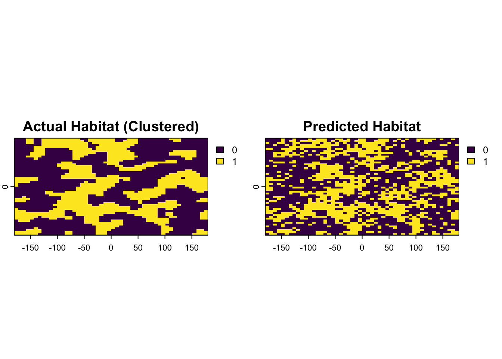
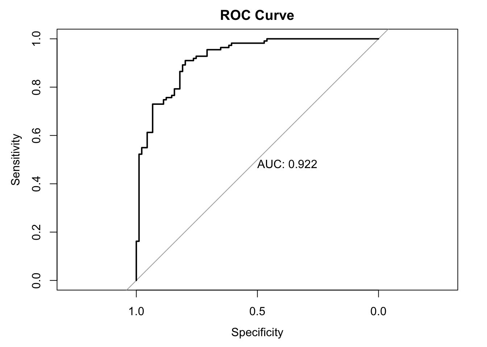

Show/Hide Code
# install.packages("caret")
# install.packages("pROC")
# install.packages("spDataLarge") # In case you don't have it from Module 3A Structured Coursebook
In Module 3, we successfully transformed raw satellite imagery into meaningful environmental variables like NDVI. We now have maps that suggest where vegetation is healthy or where water bodies exist. But a crucial question remains: How accurate are these maps? Do the patterns we see from space truly reflect the conditions on the ground where disease transmission actually occurs?
This module addresses that question head-on. Validation is the process of rigorously assessing the accuracy of our models and maps against independent, real-world data, often called ground-truth data. Without this step, our maps are merely hypotheses. With it, they become evidence-based tools for public health action.
By the end of this notebook, you will be able to: 1. Understand the principle of ground-truthing and its importance in epidemiology. 2. Link ground-truth data (points) to remote sensing data (rasters) by extracting pixel values. 3. Perform a formal accuracy assessment for a classified map using a Confusion Matrix. 4. Calculate and interpret key accuracy metrics like Overall Accuracy, Producer’s/User’s Accuracy (Sensitivity/Specificity), and the Kappa coefficient. 5. Evaluate models that predict probabilities using Receiver Operating Characteristic (ROC) curves and the Area Under the Curve (AUC).
We’ll use our standard packages, and add two new ones specifically for statistical validation: caret and pROC.
Now, let’s load our required libraries.
The first step in any validation exercise is to link your ground-truth data to your remote sensing product. This process is called extraction.
Let’s imagine we conducted a field survey and have the GPS locations of 100 random survey points. We want to find the NDVI value at each of these locations.
# 1. Load the landsat raster and calculate NDVI using positional indices
landsat_path <- system.file("raster/landsat.tif", package = "spDataLarge")
landsat <- rast(landsat_path)
landsat_ndvi <- (landsat[[4]] - landsat[[3]]) / (landsat[[4]] + landsat[[3]]) # Using positional indices
# 2. Simulate our ground-truth survey points
set.seed(1984) # for reproducibility
gt_points <- spatSample(landsat_ndvi, size = 100, "random", as.points = TRUE)
gt_points_sf <- st_as_sf(gt_points) %>% # Convert to sf object
select(-1) %>% # remove the dummy raster value column
mutate(point_id = 1:100) # Give each point a unique ID
# 3. Perform the extraction
extracted_values <- terra::extract(landsat_ndvi, gt_points_sf)
# 4. Inspect the result
head(extracted_values) ID landsat_4
1 1 0.24296411
2 2 0.09798281
3 3 0.18418055
4 4 0.18159787
5 5 0.11956828
6 6 0.19367867Simple feature collection with 6 features and 3 fields
Geometry type: POINT
Dimension: XY
Bounding box: xmin: 304710 ymin: 4113990 xmax: 335040 ymax: 4141110
Projected CRS: WGS 84 / UTM zone 12N
point_id ID landsat_4 geometry
1 1 1 0.24296411 POINT (304710 4141110)
2 2 2 0.09798281 POINT (305790 4120380)
3 3 3 0.18418055 POINT (325800 4124700)
4 4 4 0.18159787 POINT (312210 4130640)
5 5 5 0.11956828 POINT (310500 4122330)
6 6 6 0.19367867 POINT (335040 4113990)To assess the accuracy of a classified map (e.g., “Suitable Habitat” vs. “Unsuitable Habitat”), we use a Confusion Matrix.
| Actual: Positive | Actual: Negative | |
|---|---|---|
| Pred: Positive | True Positive (TP) | False Positive (FP) |
| Pred: Negative | False Negative (FN) | True Negative (TN) |
Since we don’t have a real classified map, we will simulate one to understand the methodology.
# Step 1: Simulate a "true" habitat map (the ground truth reality)
set.seed(101)
true_habitat <- rast(nrows=50, ncols=50, vals=rbinom(2500, 1, 0.4))
names(true_habitat) <- "actual"
# Step 2: Simulate our "predicted" map from a model with ~20% error
predicted_habitat <- true_habitat
n_errors <- round(ncell(predicted_habitat) * 0.20)
error_cells <- sample(1:ncell(predicted_habitat), n_errors)
predicted_habitat[error_cells] <- 1 - predicted_habitat[error_cells]
names(predicted_habitat) <- "predicted"
# Plot them to see the difference
plot(c(true_habitat, predicted_habitat), main=c("Actual Habitat", "Predicted Habitat"))
# Step 3: Generate validation points and extract values
validation_points <- spatSample(true_habitat, size = 250, "random", xy=TRUE)
validation_points$predicted <- terra::extract(predicted_habitat, validation_points[,c("x","y")])$predicted
# Step 4: Prepare data for the confusion matrix (must be factors)
validation_data <- as.data.frame(validation_points)
validation_data$predicted <- factor(validation_data$predicted, levels = c(0, 1), labels = c("Unsuitable", "Suitable"))
validation_data$actual <- factor(validation_data$actual, levels = c(0, 1), labels = c("Unsuitable", "Suitable"))Now we have our validation_data with “predicted” and “actual” columns. Let’s create the confusion matrix.
Confusion Matrix and Statistics
Reference
Prediction Unsuitable Suitable
Unsuitable 118 15
Suitable 33 84
Accuracy : 0.808
95% CI : (0.7536, 0.8549)
No Information Rate : 0.604
P-Value [Acc > NIR] : 3.631e-12
Kappa : 0.6108
Mcnemar's Test P-Value : 0.01414
Sensitivity : 0.8485
Specificity : 0.7815
Pos Pred Value : 0.7179
Neg Pred Value : 0.8872
Prevalence : 0.3960
Detection Rate : 0.3360
Detection Prevalence : 0.4680
Balanced Accuracy : 0.8150
'Positive' Class : Suitable
To evaluate models that predict a continuous probability, we use a Receiver Operating Characteristic (ROC) curve. The key summary metric is the Area Under the Curve (AUC), where 1.0 is a perfect model and 0.5 is no better than random chance.
Let’s simulate some data for a disease presence/absence study.
# Step 1: Simulate data
set.seed(42)
n_samples <- 200
roc_data <- data.frame(
# The true presence (1) or absence (0) of the disease
ground_truth = rbinom(n_samples, 1, 0.5)
)
# Simulate model probabilities. A good model will give higher scores to the 'presence' cases.
roc_data$model_prob <- ifelse(roc_data$ground_truth == 1,
rnorm(n_samples, mean=0.7, sd=0.2),
rnorm(n_samples, mean=0.3, sd=0.2))
# Ensure probabilities are between 0 and 1
roc_data$model_prob[roc_data$model_prob > 1] <- 1
roc_data$model_prob[roc_data$model_prob < 0] <- 0
# Step 2: Generate the ROC curve object using the pROC package
roc_object <- roc(ground_truth ~ model_prob, data = roc_data)
# Step 3: Calculate the AUC
auc_value <- auc(roc_object)
print(paste("Area Under Curve (AUC):", round(auc_value, 3)))[1] "Area Under Curve (AUC): 0.922"
Our simulated model has an AUC of 0.92, indicating it has excellent discriminatory power.
Validation is not just a final step; it is an integral part of the modeling process. In this module, you have learned the essential quantitative methods for evaluating the performance of your geospatial models.
You now know how to link field data to raster data using extraction. You can construct and interpret a confusion matrix and its key metrics to assess a classified map. Furthermore, you can evaluate probabilistic risk models using ROC curves and the AUC.
These skills are what transform a spatial analysis from a descriptive exercise into a rigorous scientific investigation. They allow you to quantify the uncertainty in your results and provide the evidence needed to have confidence in your findings.
In the next and final modules, we will look at how to build the spatial statistical models themselves and discuss best practices for ensuring your research is robust and reproducible.